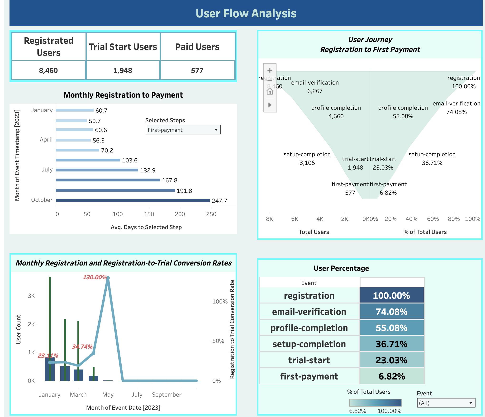
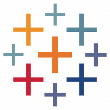

2. Proje – Kullanıcı Hunisi Analizi (Tableau)

Açıklama
Bu analiz, bir dijital ürün veya platformun kullanıcı yolculuğunu adım adım izleyerek, potansiyel müşterilerin hangi aşamalarda kaybedildiğini ortaya koyar. Amacı, kullanıcıları daha iyi anlamak, doğru zamanda doğru aksiyonları alarak dönüşüm oranlarını artırmak ve büyümeyi desteklemektir.
Bu analiz ne kazandırır?
- Kullanıcıların kayıt olmaktan ödeme yapmaya kadar geçtiği tüm aşamalar net biçimde ortaya konur.
- En çok kayıp verilen adımlar belirlenir ve bu noktalara odaklanılır.
- Dönüşüm oranı zaman içinde izlenerek kampanya, tasarım veya teknik değişikliklerin etkisi ölçülür.
- Her dönüşüm adımı ayrı analiz edildiği için ürün ve pazarlama ekipleri spesifik stratejiler geliştirebilir.
- Müşteri edinme maliyeti düşer, elde tutma oranı artar.
Sonuç: Kullanıcıların neden kaybedildiğini değil, nasıl elde tutulacağını da gösteren güçlü bir rehber.
Öneriler
- Kayıp yaşanan adımda UX yeniden tasarlanmalı (form uzunluğu, sayfa hızı vb.).
- Aktif olmayan kullanıcılar için otomatik hatırlatma ve kampanyalar kurgulanmalı.
- Yüksek dönüşüm dönemlerindeki uygulama/kampanya değişiklikleri tekrar kullanılmalı.
- Zayıf dönüşüm sağlayan kaynaklara özel içerik ve yönlendirme stratejileri oluşturulmalı.
- İlk ödemeye ulaşamayan kullanıcılar için kişiselleştirilmiş teşvikler sunulmalı.
- Sadık kullanıcı profiline benzer kitlelere hedefli reklamlar gösterilmeli.
Teknik Analiz
Kullanılan Araç: Tableau Public
Veri Yapısı: Kayıt, aktivasyon, etkileşim ve ödeme event’leri
Dashboard Bileşenleri:
- Kullanıcı Hunisi – Kayıt → Aktivasyon → Etkileşim → Ödeme
- Zaman Serisi Dönüşüm – Aylık dönüşüm oranı
- Kanal Bazlı Dönüşüm – Trafik kaynağına göre karşılaştırma
- Ortalama Kayıttan Ödemeye Süre – Boxplot / KPI
- Dönüşümde Başarılı Segmentler – Treemap / Donut
Etkileşim: Kanal, zaman ve segment filtreleri; detaylı tool-tip’ler.
Kullanılan Araç:
Tableau
